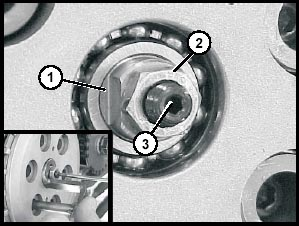

This problem was posted to the Benelliforum by "irfuel". Taksil apparently has also suffered it ...
irfuel --- I have some issues with my clutch, it doesnt seem to "decouple" completely. So when pressing
the clutch lever all the way in, it still stays a bit connected and I feel the bike pulling forward. Also
the clutch lever only seems to work at the very last part of its usage, so with my fingers nearly completely
stretched.
With the engine off, the bike in 1st gear and the clutch lever completely pulled in, I cannot push the bike
forward
There's 2 things to look for :-
1. JohnnyO - Benelliforum
Do you have the improved clutch actuating arm (steel instead of alloy) fitted on the left side of the engine?
The improved actuating arm reduces clutch drag (which is what sounds like you are suffering from) and makes
neutral easier to find.
2. JohnnyO's Clutch Adjustment procedure
- submitted by TaxTre - Benelliforum - refer to photos on pp 151, 162 & 163
of the Tornado Workshop Manual
(this procedure is just about the same as suggested in the manual - Ed.)
Remove the lower fairing.
Lean the bikes left handlebar against the wall, or drain the oil if you prefer.
Remove the right side engine cover, 8mm hex screws and two 5mm allen head bolts.
Set the cable adjuster on the left handlebar to the halfway point in the adjustment range.
While holding item ‘1’ in the below drawing, undo nut ‘2’.
With nut ‘2’ back-off, turn shaft ‘3’ in using an allen-key until you feel it ‘seat’, then back it out ¼
turn.

While holding ‘1’ and ‘3’, tighten nut ‘2’ until tight.
Re-fit the right engine cover - as long as the gasket is not broken, you can reuse it. Sealer is not required,
just wipe off any excess oil and make sure it is in place when fitting the screws.
Screw Fitting Order - install the two allen-key bolts first, do them up tight, then back them off 1/8 turn,
fit all the others screws and tighten them, then tighten the two allen key bolts.
Fine tune the clutch cable adjuster to your liking.
Re-fill the engine oil and fit the fairing.
Check your lever adjustment
The locknut on my clutch lever was never tightened up from new. The adjustment nut gradually wound itself
in, making the clutch disengage lower and lower as time went by. After 2 years, I found that the clutch
was dragging. I couldn't fid neutral even while moving.
Adjusting the cable fixed the problem.